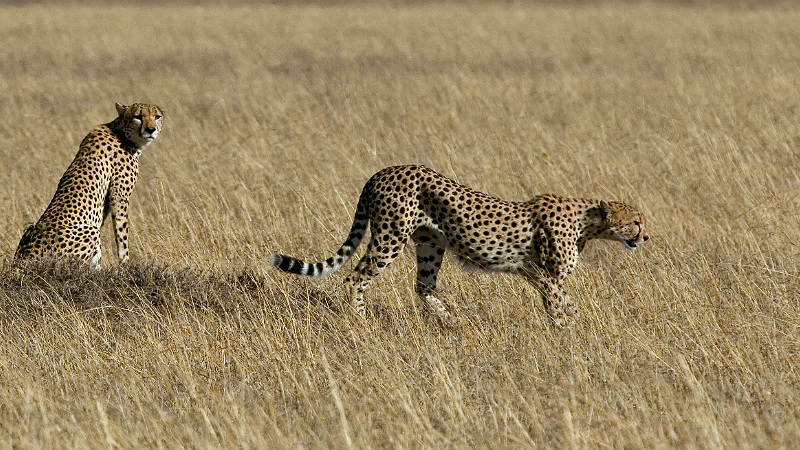

Гепарди Гепарди - найшвидші наземні тварини на Землі. Вони живуть в саванах, на луках та в напівпустельних районах. Гепарди відомі своєю неймовірною швидкістю, яка може досягати 120 км/год. Їм потрібна швидкість для полювання. Гепарди - одинаки, на відміну від левів, які живуть у прайдах. Самки гепардів виховують дитинчат самостійно. 